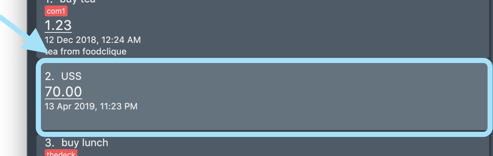

Introduction
This page will document my overall contributions to the Software Engineering Project, Billboard.
About Billboard
For our Software Engineering Project, my team of 5 were tasked with enhancing a desktop addressbook application. With students as our target users, we decided to morph it into a personal financial management system called Billboard.
Billboard enables students to track and manage their expenses in an intuitive and convenient way. With features like tagging and archiving, students are able to manage and organise their expenses. Similarly,
features like viewing statistical graphs of their recent expenditure and advanced search functions allows them to track their expenses.
Billboard is a Command Line Interface(CLI) desktop application, meaning that it is catered for students who prefer typing as all interactions between users and the application is through typing.
For more user friendliness, Billboard has a Graphical User Interface(GUI).
This is what Billboard looks like:

My role was to design and implement features related to tagging. The following sections illustrate these enhancements in more detail, as well as the relevant documentation i have added to the user and developer guides in relation to them.
Note the following symbols and formatting used in this document:
|
This symbol indicates important information |
tag - Red text indicates that this is a command that can be inputted into the command line and executed by the application.
UniqueTagList - Bold red text indicates a component, class or object in the architecture of the application.
"tech" - Italicised text with quotation marks indicates the name of an expense or tag.
Summary of contributions
This section shows a summary of my coding, documentation, and other helpful contributions to Billboard.
-
Major enhancement: i added features related to tagging.
-
What it does: This enhancement allows users to add and remove tags from an expense. Users can also list out existing tags and filter their expenses by tags.
-
Justifications: Tagging allows for easier management of expenses. Expenses with the same tags are grouped together which allows users to search for related expenses quickly.
-
Highlights: This enhancement works with existing as well as future commands. An in-depth analysis of design alternatives was necessary since there are many ways to implement this enhancement, each with its own pros and cons in terms of efficiency or space allocation in the application. The current design is used to ensure there is a balance between space allocation and efficiency of the application.
-
-
Code Contributed: RepoSense
-
Other Contributions:
-
Enhancements to existing features:
-
Documentation:
-
Contributed to user stories, use cases and non functional requirements in the Developer Guide.
-
-
Community:
-
Contributions to the User Guide
We had to update the original addressbook User Guide with instructions for the enhancements that we had added.
The following is an excerpt from Billboard User Guide, showing additions that I have made for the tag features.
Note that examples and diagrams for tag list and tag filter are omitted due to space constraints.
Tagging expenses: tag
This feature allows you to assign tags to your expenses. Expenses with the same tag will be grouped together, allowing you to search for related expenses easily.
|
Tag names should be alphanumeric. This means that they should not contain spaces or special characters. Tag names are case sensitive. You are not able to use this feature on archived expenses. |
To view a list of supported tag commands, you could type tag in the command box and press enter.
Similarly, to view parameters for supported tag commands, you could type tag followed by the supported tag command and press enter.
Example: tag rm
Adding a tag: tag add
This command adds your input tag(s) to the expense at the index you have specified.
Usage:
tag add [INDEX] t/[TAG] t/[TAG…]
Example:
Lets say that you want to add the tags "holiday" and "hangout" to the expense "USS" at index 2.
To add the tags:
1. Type tag add 2 t/holiday t/hangout in the command box and press enter to execute it.

2. The result box will display the message "Added tag(s) to Expense:
Name: USS Description: Amount: 70.00 Created: 13 Apr 2019, 11:23 PM Archive Name: Tags: [[hangout], [holiday]]"

3. You could see the tags "holiday" and "hangout" in the expense at index 2.

|
You are not able to add existing tags. If you input existing and non-existing tags, Billboard adds the non-existing tags only. If you input duplicate tags, Billboard adds them once. i.e Billboard does not allow duplicate tags in an expense. Example: tag add t/holiday t/holiday
|
Removing a tag: tag rm
This command removes your input tag(s) from the expense at the index you have specified.
Usage:
tag rm [INDEX] t/[TAG] t/[TAG…]
Example:
Lets say that you want to remove the tags "holiday" and "hangout" from the expense "USS" at index 2.
To remove the tags:
1. Type tag rm 2 t/holiday t/hangout in the command box and press enter to execute it.

2. The result box will display the message "Removed tag(s) from Expense:
Name: USS Description: Amount: 70.00 Created: 13 Apr 2019, 11:23 PM Archive Name: Tags: []"

3. You could see that the expense at index 2 no longer has the tags "hangout" and "holiday".

|
You are not able to remove non-existing tags. If you input duplicate tags, Billboard removes them once. Example: tag rm t/holiday t/holiday
|
Filtering by tag: tag filter
This command filters expenses by your input tag(s).
Usage:
tag filter t/[TAG] t/[TAG…]
Contributions to Developer Guide
We had to update the original addressbook Developer Guide with instructions for the enhancements that we had added.
The following is an excerpt from Billboard Developer Guide, showing additions that I have made for the tag features.
Tagging
Proposed Implementation
The tag feature supports the following operations:
-
Adding tags to an expense
-
Removing tags from an expense
-
Filtering expenses by tags
-
Listing all existing tags
These actions are facilitated by the UniqueTagList and TagCountManager classes:
-
UniqueTagListmapsStringtoTagwhereStringis the name of theTag. It ensures that the sameTagobject is referenced instead of creating manyTagobjects of the same name during operations. -
TagCountManagermapsTagtoInteger, whereIntegeris the number ofExpensetagged with eachTag. It allowsTagobjects that are not tagged with anyExpenseto be tracked and removed.
Operations include:
-
UniqueTagList#retrieveTags(List<String>)— Retrieves corresponding tags fromUniqueTagListbased on the list of tag names. -
UniqueTagList#removeAll(List<Tag>)— Removes tags given in the list from theUniqueTagList. -
UniqueTagList#getTagNames()— Returns a list of existing tag names. -
TagCountManager#incrementAllCount(Set<Tag>)— Increments theIntegermapped to the tags in the set by 1. -
TagCountManager#decreaseAllCount(Set<Tag>)— Decreases theIntegermapped to the tags in the set by 1. -
TagCountManager#removeZeroCount()— Removes all mappings where theIntegeris equal to 0.
These operations are exposed in the Model interface as:
-
Model#retrieveTags(List<String>) -
Model#incrementCount(Set<Tag>) -
Model#decreaseCount(Set<Tag>)—TagCountManager#removeZeroCount()andUniqueTagList#removeAll(List<Tag>)are called in this method to remove any tag not tagged to any expense from theUniqueTagListandTagCountManager. -
Model#getTagNames()
Given below is an example usage scenario and how adding tag executes at every step.
-
Step 1: The user launches the application. The
Modelis initialized with saved data. All tags are loaded intoUniqueTagListandTagCountManager. -
Step 2: User enters the command
tag add 1 t/test t/test2to add tags to theExpenseat index 1 in Billboard.
2a.BillboardParserparses this command, creating aTagCommandParserafter determining that it is a tag command.
2b. TheTagCommandParserthen parsesadd 1 t/test t/test2and creates anAddTagCommandParserafter determining that it is a command to add tags.
2c. Subsequently, theAddTagCommandParserparses1 t/test1 t/test2intoIndex1 and a list ofStringconsisting oftest1andtest2.AddTagCommandParsercreatesAddTagCommandwith theIndexand list ofStringas parameters. -
Step 3:
LogicManagerexecutes theAddTagCommand.
During execution,
3a.AddTagCommandcallsModel#retrieveTags(List<String>)on the list ofStringconsisting oftest1andtest2which returns a set ofTagwith tag namestest1andtest2.
3b.AddTagCommandthen callsModel#incrementCount(Set<Tag>)on the set ofTag.
3c. Lastly,AddTagCommandcallsModel#setExpense(Expense, Expense)which edits and updates theExpenseat index 1 in theModel. The updatedExpenseis then reflected on the GUI.
Duplicate tags in an Expense is not allowed.If the user tries to add an existing Tag to an Expense, AddTagCommand throws an exception, leading to an error message.If the user tries to add duplicate Tag, i.e enter 2 of the same Tag, AddTagCommand adds the tag once and increments the number of expenses tagged to it by 1.
|
The following sequence diagram shows how the adding tag operation works.

The lifeline for TagCommandParser and AddTagCommandParser should end at the destroy marker (X) but due to a limitation of PlantUML, the lifeline reaches the end of diagram.
|
The following activity diagram summarizes what happens when a user enters a command to add tags to an expense.
Design Considerations
Aspect: Data structure to support tag commands
-
Alternative 1 (current choice): Use a
UniqueTagListto map tag names toTagandTagCountManagerto mapTagto number ofExpensetagged to it.-
Pros:
-
Each structure has only one responsibility.
-
Fast retrieval and update of data
-
-
Cons:
-
Requires maintenance of both structures as they need to sync with each other.
-
Retrieval of all
Expenseunder aTagrequires filtering through the whole list ofExpense.
-
-
-
Alternative 2 : Have each
Tagstore a list ofExpensetagged to it.-
Pros:
-
Fast retrieval of all
Expensesunder eachTag
-
-
Cons:
-
Circular dependency
-
Since implementation of Billboard objects are immutable, there is a constant need to update the
Expensein the list even after executing non-tag related commands.
-
-
-
Alternative 3 : Use one map to map
TagtoExpensetagged to it.-
Pros:
-
Fast retrieval of all
Expensesunder eachTag
-
-
Cons:
-
Since implementation of Billboard objects are immutable, there is a constant need to update the
Expensein the list even after executing non-tag related commands.
-
-